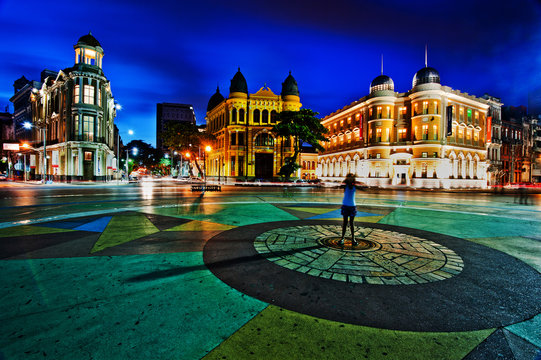

Praça Marco Zero
O Marco Zero é um dos pontos turísticos mais famosos da cidade e é um local que deve ser visitado por quem vai a Recife.

Sobre o Marco Zero
Marco Zero tem grande importância não apenas para a história, mas também para a cultura da cidade e do estado de Pernambuco. Localizado no centro histórico da cidade, é considerado o ponto inicial para medir as distâncias entre Recife e outras cidades de Pernambuco.
Conheça outros Pontos Turísticos de Recife
Conheça outros lugares para visitar no Recife Antigo. Clique aqui para ver mais.